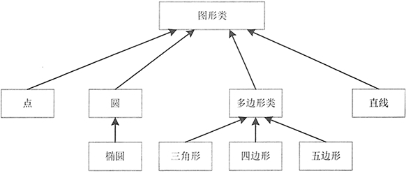

Java继承（extends）简明教程
继承是面向对象的三大特征之一。继承和现实生活中的“继承”的相似之处是保留一些父辈的特性，从而减少代码冗余，提高程序运行效率。
Java 中的继承就是在已经存在类的基础上进行扩展，从而产生新的类。已经存在的类称为父类、基类或超类，而新产生的类称为子类或派生类。在子类中，不仅包含父类的属性和方法，还可以增加新的属性和方法。
Java 中子类继承父类的语法格式如下：
那么为什么国内把 extends 翻译为“继承”呢？子类扩展父类之后就可以获得父类的属性和方法，这与汉语中的继承（子类从父类获得一笔财富称为继承）具有相似性。
1）创建人类 People，并定义 name、age、sex、sn 属性，代码如下：
2）创建 People 类的子类 Student 类，并定义 stuNo 和 department 属性，代码如下：
注意：如果在父类中存在有参的构造方法而并没有重载无参的构造方法，那么在子类中必须含有有参的构造方法，因为如果在子类中不含有构造方法，默认会调用父类中无参的构造方法，而在父类中并没有无参的构造方法，因此会出错。
3）创建 People 类的另一个子类 Teacher，并定义 tYear 和 tDept 属性，代码如下：
4）编写测试类 PeopleTest，在该类中创建 People 类的不同对象，分别调用它们的 toString() 方法，输出不同的信息。具体的代码如下：
很多地方在介绍 Java 的单继承时，可能会说 Java 类只能有一个父类，严格来讲，这种说法是错误的，应该是一个类只能有一个直接父类，但是它可以有多个间接的父类。例如，Student 类继承 Person 类，Person 类继承 Person1 类，Person1 类继承 Person2 类，那么 Person1 和 Person2 类是 Student 类的间接父类。图 1 展示了单继承的关系。
从图 1 中可以看出，三角形、四边形和五边形的直接父类是多边形类，它们的间接父类是图形类。图形类、多边形类和三角形、四边形、五边形类形成了一个继承的分支。在这个分支上，位于下层的子类会继承上层所有直接或间接父类的属性和方法。如果两个类不在同一个继承树分支上，就不会存在继承关系，例如多边形类和直线。
如果定义一个 Java 类时并未显式指定这个类的直接父类，则这个类默认继承 java.lang.Object 类。因此，java.lang.Object 类是所有类的父类，要么是其直接父类，要么是其间接父类。因此所有的 Java 对象都可调用 java.lang.Object 类所定义的实例方法。
使用继承的注意点：
自然界的所有事物都是优点和缺点并存的，继承的缺点如下：
Java 中的继承就是在已经存在类的基础上进行扩展，从而产生新的类。已经存在的类称为父类、基类或超类，而新产生的类称为子类或派生类。在子类中，不仅包含父类的属性和方法，还可以增加新的属性和方法。
Java 中子类继承父类的语法格式如下：
修饰符 class class_name extends extend_class {
// 类的主体
}
其中，class_name 表示子类（派生类）的名称；extend_class 表示父类（基类）的名称；extends 关键字直接跟在子类名之后，其后面是该类要继承的父类名称。例如：
public class Student extends Person{}
Java 的继承通过 extends 关键字来实现，extends 的英文意思是扩展，而不是继承。extends 很好的体现了子类和父类的关系，即子类是对父类的扩展，子类是一种特殊的父类。从这个角度看，使用继承来描述子类和父类的关系是错误的，用扩展更恰当。那么为什么国内把 extends 翻译为“继承”呢？子类扩展父类之后就可以获得父类的属性和方法，这与汉语中的继承（子类从父类获得一笔财富称为继承）具有相似性。
类的继承不改变类成员的访问权限，也就是说，如果父类的成员是公有的、被保护的或默认的，它的子类仍具有相应的这些特性，并且子类不能获得父类的构造方法。Java 与 C++ 定义继承类的方式十分相似。Java 用关键字 extends 代替了 C++ 中的冒号（：）。在 Java 中，所有的继承都是公有继承， 而没有 C++ 中的私有继承和保护继承。
例 1
教师和学生都属于人，他们具有共同的属性：姓名、年龄、性别和身份证号，而学生还具有学号和所学专业两个属性，教师还具有教龄和所教专业两个属性。下面编写 Java 程序代码，使教师（Teacher）类和学生（Student）类都继承于人（People）类，具体的实现步骤如下。1）创建人类 People，并定义 name、age、sex、sn 属性，代码如下：
public class People {
public String name; // 姓名
public int age; // 年龄
public String sex; // 性别
public String sn; // 身份证号
public People(String name, int age, String sex, String sn) {
this.name = name;
this.age = age;
this.sex = sex;
this.sn = sn;
}
public String toString() {
return "姓名：" + name + "\n年龄：" + age + "\n性别：" + sex + "\n身份证号：" + sn;
}
}
如上述代码，在 People 类中包含 4 个公有属性、一个构造方法和一个 toString() 方法。2）创建 People 类的子类 Student 类，并定义 stuNo 和 department 属性，代码如下：
public class Student extends People {
private String stuNo; // 学号
private String department; // 所学专业
public Student(String name, int age, String sex, String sn, String stuno, String department) {
super(name, age, sex, sn); // 调用父类中的构造方法
this.stuNo = stuno;
this.department = department;
}
public String toString() {
return "姓名：" + name + "\n年龄：" + age + "\n性别：" + sex + "\n身份证号：" + sn + "\n学号：" + stuNo + "\n所学专业：" + department;
}
}
由于 Student 类继承自 People 类，因此，在 Student 类中同样具有 People 类的属性和方法，这里重写了父类中的 toString() 方法。注意：如果在父类中存在有参的构造方法而并没有重载无参的构造方法，那么在子类中必须含有有参的构造方法，因为如果在子类中不含有构造方法，默认会调用父类中无参的构造方法，而在父类中并没有无参的构造方法，因此会出错。
3）创建 People 类的另一个子类 Teacher，并定义 tYear 和 tDept 属性，代码如下：
public class Teacher extends People {
private int tYear; // 教龄
private String tDept; // 所教专业
public Teacher(String name, int age, String sex, String sn, int tYear, String tDept) {
super(name, age, sex, sn); // 调用父类中的构造方法
this.tYear = tYear;
this.tDept = tDept;
}
public String toString() {
return "姓名：" + name + "\n年龄：" + age + "\n性别:" + sex + "\n身份证号：" + sn + "\n教龄：" + tYear + "\n所教专业：" + tDept;
}
}
Teacher 类与 Student 类相似，同样重写了父类中的 toString() 方法。4）编写测试类 PeopleTest，在该类中创建 People 类的不同对象，分别调用它们的 toString() 方法，输出不同的信息。具体的代码如下：
public class PeopleTest {
public static void main(String[] args) {
// 创建Student类对象
People stuPeople = new Student("王丽丽", 23, "女", "410521198902145589", "00001", "计算机应用与技术");
System.out.println("----------------学生信息---------------------");
System.out.println(stuPeople);
// 创建Teacher类对象
People teaPeople = new Teacher("张文", 30, "男", "410521198203128847", 5, "计算机应用与技术");
System.out.println("----------------教师信息----------------------");
System.out.println(teaPeople);
}
}
运行程序，输出的结果如下：
----------------学生信息--------------------- 姓名：王丽丽 年龄：23 性别：女 身份证号：410521198902145589 学号：00001 所学专业：计算机应用与技术 ----------------教师信息---------------------- 姓名：张文 年龄：30 性别:男 身份证号：410521198203128847 教龄：5 所教专业：计算机应用与技术
单继承
Java 语言摒弃了 C++ 中难以理解的多继承特征，即 Java 不支持多继承，只允许一个类直接继承另一个类，即子类只能有一个直接父类，extends 关键字后面只能有一个类名。例如，如下代码会导致编译错误：
class Student extends Person,Person1,Person2{…}
class Student extends Person,extends Person1,extends Person2{…}
很多地方在介绍 Java 的单继承时，可能会说 Java 类只能有一个父类，严格来讲，这种说法是错误的，应该是一个类只能有一个直接父类，但是它可以有多个间接的父类。例如，Student 类继承 Person 类，Person 类继承 Person1 类，Person1 类继承 Person2 类，那么 Person1 和 Person2 类是 Student 类的间接父类。图 1 展示了单继承的关系。

图 1 图形类之间的关系
图 1 图形类之间的关系
从图 1 中可以看出，三角形、四边形和五边形的直接父类是多边形类，它们的间接父类是图形类。图形类、多边形类和三角形、四边形、五边形类形成了一个继承的分支。在这个分支上，位于下层的子类会继承上层所有直接或间接父类的属性和方法。如果两个类不在同一个继承树分支上，就不会存在继承关系，例如多边形类和直线。
如果定义一个 Java 类时并未显式指定这个类的直接父类，则这个类默认继承 java.lang.Object 类。因此，java.lang.Object 类是所有类的父类，要么是其直接父类，要么是其间接父类。因此所有的 Java 对象都可调用 java.lang.Object 类所定义的实例方法。
使用继承的注意点：
- 子类一般比父类包含更多的属性和方法。
- 父类中的 private 成员在子类中是不可见的，因此在子类中不能直接使用它们。
- 父类和其子类间必须存在“是一个”即“is-a”的关系，否则不能用继承。但也并不是所有符合“is-a”关系的都应该用继承。例如，正方形是一个矩形，但不能让正方形类来继承矩形类，因为正方形不能从矩形扩展得到任何东西。正确的继承关系是正方形类继承图形类。
- Java 只允许单一继承（即一个子类只能有一个直接父类），C++ 可以多重继承（即一个子类有多个直接父类）。
继承的优缺点
在面向对象语言中，继承是必不可少的、非常优秀的语言机制，它有如下优点：- 实现代码共享，减少创建类的工作量，使子类可以拥有父类的方法和属性。
- 提高代码维护性和可重用性。
- 提高代码的可扩展性，更好的实现父类的方法。
自然界的所有事物都是优点和缺点并存的，继承的缺点如下：
- 继承是侵入性的。只要继承，就必须拥有父类的属性和方法。
- 降低代码灵活性。子类拥有父类的属性和方法后多了些约束。
- 增强代码耦合性（开发项目的原则为高内聚低耦合）。当父类的常量、变量和方法被修改时，需要考虑子类的修改，有可能会导致大段的代码需要重构。
关注公众号「站长严长生」，在手机上阅读所有教程，随时随地都能学习。内含一款搜索神器，免费下载全网书籍和视频。

微信扫码关注公众号